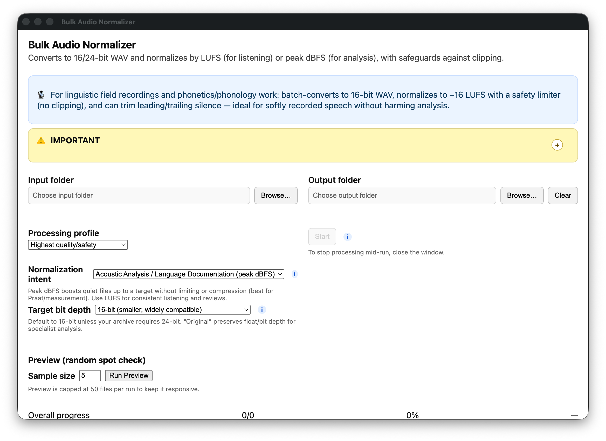
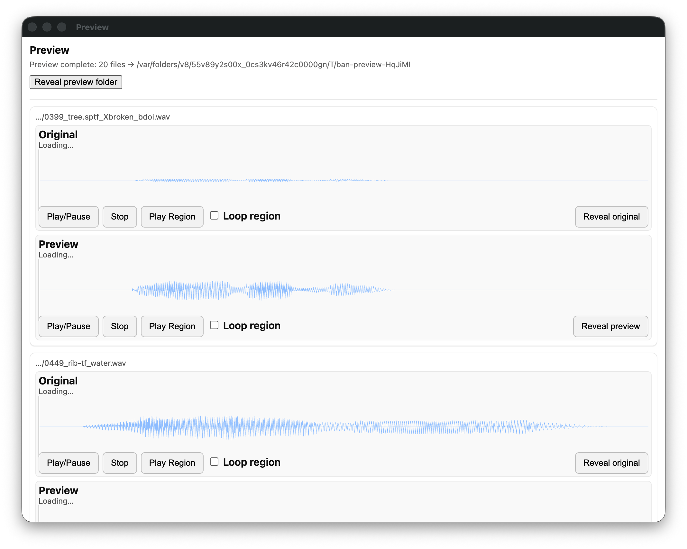
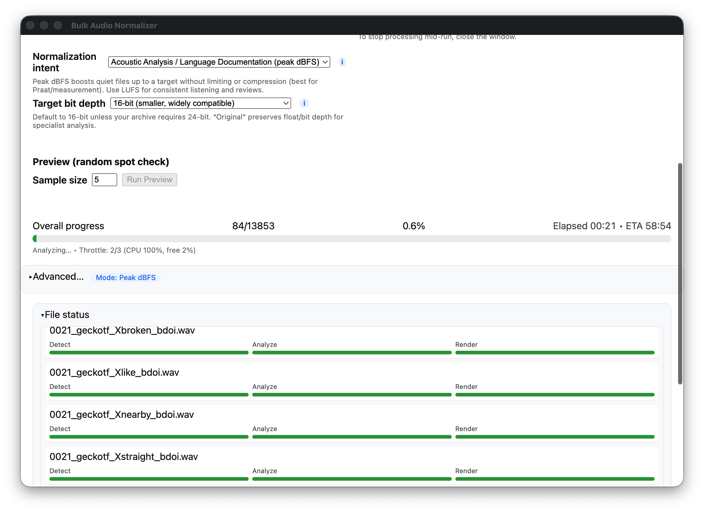

Who this is for
Field linguists and linguistics students with lots of recorded audio clips that may need some processing to be usable. If your recordings are too quiet, or there’s too much silence at the beginning/end, this app helps you clean them up quickly — no need to process files one-by-one.
- Batch process entire folders (recursively) of WAV files
- Two normalization intents:
- Peak dBFS — best for acoustic analysis (Praat, etc.)
- LUFS — best for consistent listening volume
- Optional auto-trim of leading/trailing silence
- Choose output bit depth: 16-bit, 24-bit, or keep original
- Preview a random sample before you run the full batch

Quick start (non‑developers)
macOS (DMG)
For Macs with Apple silicon (M1 or newer), macOS 11 or later.
- Download the DMG using the button above.
- Open the DMG and drag “Bulk Audio Normalizer” to Applications.
- First launch: macOS says it cannot check the app, because it is not signed with an Apple developer certificate. Open System Settings → Privacy & Security, scroll down and click “Open Anyway”.
Windows (Portable EXE)
- Download the EXE using the button above.
- Double‑click to run. If SmartScreen warns you, choose “More info” → “Run anyway”.
How to use
- Pick your Input folder. The app scans it (including subfolders) for WAV files.
- Pick an Output folder. It must be empty (the app enforces this to protect your files).
- Choose a Normalization intent:
- Peak dBFS: keeps peaks below a safe target (good for analysis; no limiter by default).
- LUFS: targets a listening loudness (−16 LUFS by default) with a safety limiter.
- Optionally turn on Auto‑trim to remove leading/trailing silence.
- Select Bit depth (16‑bit, 24‑bit, or Original).
- Use Preview to test a random sample of files with your settings.
- Click Start to process the whole batch. Quit the app to stop.
Screenshots


FAQ & troubleshooting
The app says my output folder must be empty.
This is by design to keep your files safe. Make a new empty folder (e.g., “normalized/”) and select that.
What’s the difference between Peak dBFS and LUFS?
Peak dBFS is ideal for acoustic analysis workflows (keeps headroom, no limiter). LUFS targets how loud audio sounds to people (−16 LUFS with a safety limiter to prevent clipping).
It’s still too quiet / too loud.
Try a different target. For Peak, typical targets are −12 to −6 dBFS. For LUFS, −16 is a common spoken‑audio target, but −18 or −14 may fit your context.
How do I stop a batch?
Quit the app. It safely stops all processing.
Do I need to install FFmpeg?
No. The app comes with its own FFmpeg and FFprobe. From v2.0.2, both the macOS and the Windows app use FFmpeg 6.1.6, which we build from FFmpeg’s source, licensed under the LGPLv2.1; its source is on the same release page as the app. Details are in THIRD_PARTY_NOTICES.md.
Where did the older macOS downloads go?
On 3 October 2026 we removed the macOS downloads of v1.5.1, v2.0.0 and v2.0.1 (and the v1.5.1 Windows installer). The FFmpeg inside them was a build that we may not pass on. The macOS download of v2.0.2 has an FFmpeg we built ourselves from FFmpeg’s source, which may be shared. A copy you already installed keeps working, but please use v2.0.2 from now on.